SPORTS
Sport is a form of physical activity or game. Often competitive and organized, sports use, maintain, or improve physical ability and skills. They also provide enjoyment to participants and, in some cases, entertainment to spectators.
Sport covers a range of activities performed within a set of rules and undertaken as part of leisure or competition. Sporting activities involve physical activity carried out by teams or individuals and may be supported by an institutional framework, such as a sporting agency.
game, competition, or activity needing physical effort and skill that is played or done according to rules, for enjoyment and/or as a job: Football, basketball, and hockey are all team sports.
Sports are very essential for every human life which keeps them fit and fine and physical strength. It has great importance in each stage of life. It also improves the personality of people. Sports keep our all organs alert and our hearts become stronger by regularly playing some kind of sports.
click on following links to get complete information:
football
cricket
hockey
About Us
CRICKET:

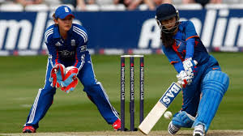
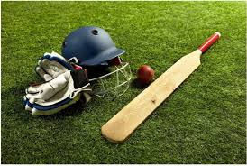
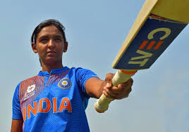
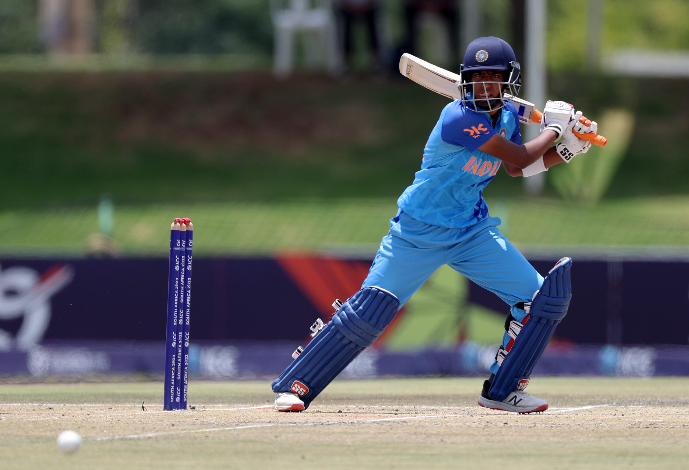
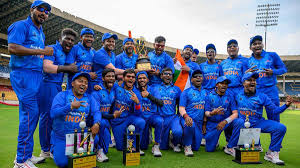
Cricket is a bat-and-ball game that is played between two teams of eleven players on a field at the centre of which is a 22-yard (20-metre) pitch with a wicket at each end, each comprising two bails balanced on three stumps. Two players from the batting team (the striker and nonstriker) stand in front of either wicket holding bats, with one player from the fielding team (the bowler) bowling the ball towards the striker's wicket from the opposite end of the pitch. The striker's goal is to hit the bowled ball with the bat and then switch places with the nonstriker, with the batting team scoring one run for each exchange. Runs are also scored when the ball reaches or crosses the boundary of the field or when the ball is bowled illegally.
The fielding team tries to prevent runs from being scored by dismissing batters (so they are "out"). Means of dismissal include being bowled, when the ball hits the striker's wicket and dislodges the bails, and by the fielding side either catching the ball after it is hit by the bat, but before it hits the ground, or hitting a wicket with the ball before a batter can cross the crease in front of the wicket. When ten batters have been dismissed, the innings ends and the teams swap roles. Forms of cricket range from Twenty20 (also known as T20), with each team batting for a single innings of 20 overs (each "over" being a set of 6 fair opportunities for the batting team to score) and the game generally lasting three to four hours, to Test matches played over five days.
Traditionally cricketers play in all-white kit, but in limited overs cricket they wear club or team colours. In addition to the basic kit, some players wear protective gear to prevent injury caused by the ball, which is a hard, solid spheroid made of compressed leather with a slightly raised sewn seam enclosing a cork core layered with tightly wound string.
The earliest known definite reference to cricket is to it being played in South East England in the mid-16th century. It spread globally with the expansion of the British Empire, with the first international matches in the second half of the 19th century. The game's governing body is the International Cricket Council (ICC), which has over 100 members, twelve of which are full members who play Test matches. The game's rules, the Laws of Cricket, are maintained by Marylebone Cricket Club (MCC) in London. The sport is followed primarily in South Asia, Australia, New Zealand, the United Kingdom, Southern Africa and the West Indies.
Women's cricket, which is organised and played separately, has also achieved international standard.The most successful side playing international cricket is Australia, which has won eight One Day International trophies, including six World Cups, more than any other country and has been the top-rated Test side more than any other country
click on links to get more information
sachin Tendulkar
Harbhajan Singh
Virender Sehwag:
HOCKEY:
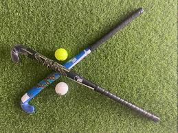
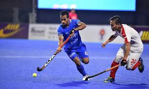
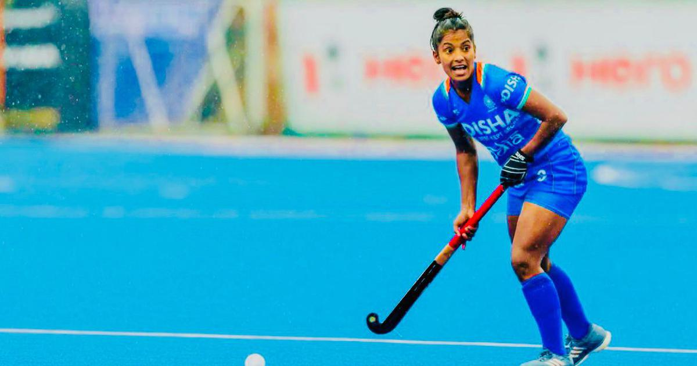
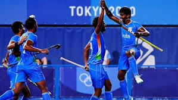
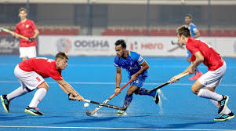
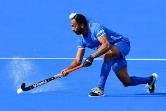
Hockey is a term used to denote a family of various types of both summer and winter team sports which originated on either an outdoor field, sheet of ice, or dry floor such as in a gymnasium. While these sports vary in specific rules, numbers of players, apparel, and playing surface, they share broad characteristics of two opposing teams using a stick to propel a ball or disk into a goal.
There are many types of hockey. Some games make the use of skates, either wheeled or bladed, while others do not. In order to help make the distinction between these various games, the word hockey is often preceded by another word i.e. field hockey, ice hockey, roller hockey, rink hockey, or floor hockey.
In each of these sports, two teams play against each other by trying to manoeuvre the object of play, either a type of ball or a disk (such as a puck), into the opponent's goal using a hockey stick. Two notable exceptions use a straight stick and an open disk (still referred to as a puck) with a hole in the center instead. The first case is a style of floor hockey whose rules were codified in 1936 during the Great Depression by Canada's Sam Jacks. The second case involves a variant which was later modified in roughly the 1970s to make a related game that would be considered suitable for inclusion as a team sport in the newly emerging Special Olympics. The floor game of gym ringette, though related to floor hockey, is not a true variant due to the fact that it was designed in the 1990s and modelled off of the Canadian ice skating team sport of ringette, which was invented in Canada in 1963. Ringette was also invented by Sam Jacks, the same Canadian who codified the rules for the open disk style of floor hockey 1936.Certain sports which share general characteristics with the forms of hockey, but are not generally referred to as hockey include lacrosse, hurling, camogie, and shinty.
Etymology
The first recorded use of the word hockey is in the 1773 book Juvenile Sports and Pastimes, to Which Are Prefixed, Memoirs of the Author: Including a New Mode of Infant Education by Richard Johnson (Pseud. Master Michel Angelo), whose chapter XI was titled "New Improvements on the Game of Hockey". The belief that hockey was mentioned in a 1363 proclamation by King Edward III of England is based on modern translations of the proclamation, which was originally in Latin and explicitly forbade the games "Pilam Manualem, Pedivam, & Bacularem: & ad Canibucam & Gallorum Pugnam". The English historian and biographer John Strype did not use the word "hockey" when he translated the proclamation in 1720, instead translating "Canibucam" as "Cambuck"; this may have referred to either an early form of hockey or a game more similar to golf or croquet.
The word hockey itself is of unknown origin. One supposition is that it is a derivative of hoquet, a Middle French word for a shepherd's stave. The curved, or "hooked" ends of the sticks used for hockey would indeed have resembled these staves, and similar folk etymologies exist for the bat-and-ball sports of Croquet and Cricket. Another supposition derives from the known use of cork bungs (stoppers), in place of wooden balls to play the game. The stoppers came from barrels containing "hock" ale, also called "hocky".
SACHIN TENDULKAR:
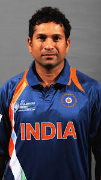
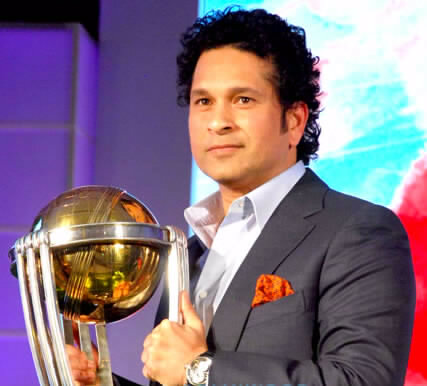
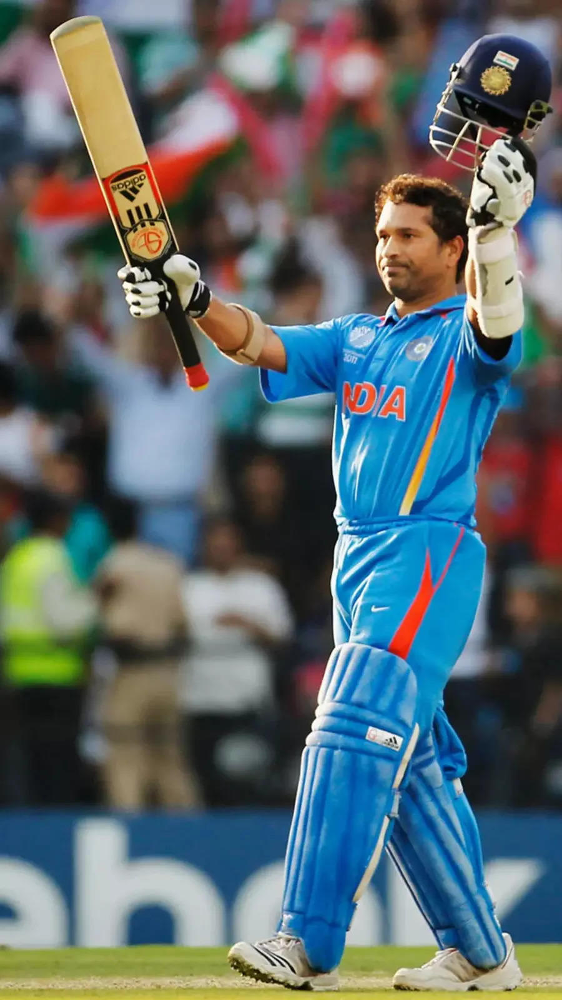
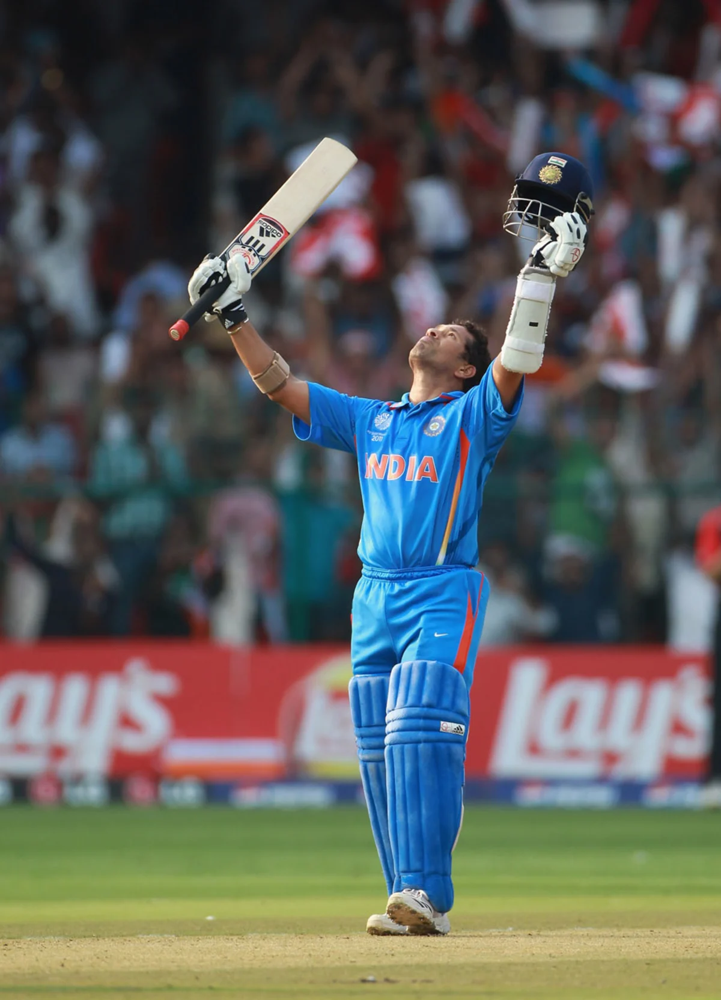
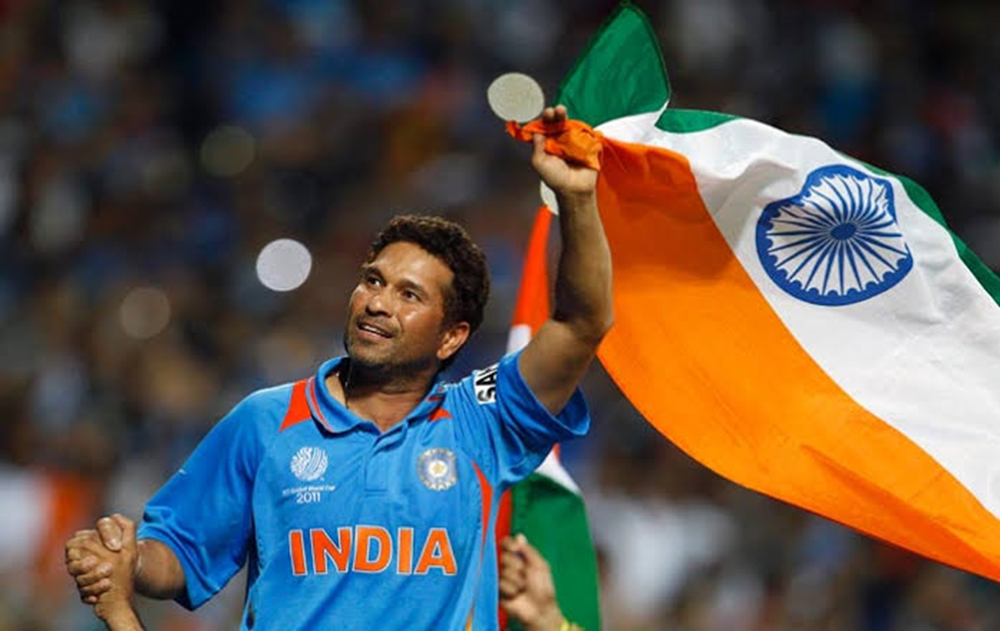
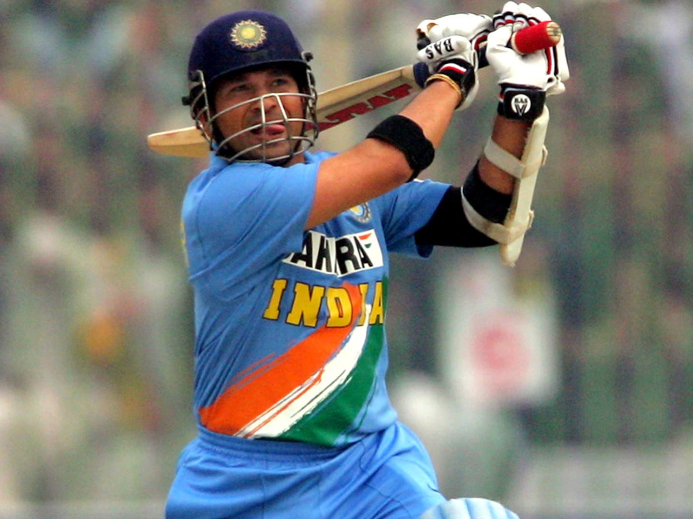
Tendulkar was born at the Nirmal Nursing Home in the Dadar neighbourhood of Bombay, Maharashtra on 24 April, 1973 into a Maharastrian family. His father, Ramesh Tendulkar, was a Marathi-language novelist and poet while his mother, Rajni, worked in the insurance industry. Tendulkar's father named him after his favourite music director, Sachin Dev Burman. Tendulkar has three older siblings: two half-brothers Nitin and Ajit, and a half-sister Savita. They were his father's children by his first wife, who died after the birth of her third child. His brother Ajit played in Bombay's Kanga Cricket League.Tendulkar spent his formative years in the Sahitya Sahawas Cooperative Housing Society in Bandra (East). As a young boy, Tendulkar was considered a bully, and he often picked fights with new children in his school.As a child, Tendulkar was interested in both tennis and cricket. He particularly idolised American player John McEnroe, and emulated his hero by growing his hair long at the age of 7 or 8 years. At this time, Tendulkar also regularly wore tennis wristbands and headbands and carried a tennis racquet with him as a sign of his love for tennis.
Awards and Honors:
- 1994 - Arjuna Award, by the Government of India in recognition of his outstanding achievement in sports
- 1997-98 - Khel Ratna Award, India's highest honour given for achievement in sports.
- 1999 - Padma Shri, India's fourth-highest civilian award.
- 2001 - Maharashtra Bhushan Award, Maharashtra state's highest civilian award.
- 2008 - Padma Vibhushan, India's second-highest civilian award
- 2010 - Honorary Group Captain
- 2014 - Bharat Ratna, India's highest civilian award.Australia
- 2012- Honorary Member of the Order of Australia, given by the Australian government.
- 2013 Indian postage stamps commemorating Sachin Tendulkar's 200th Test Match
- 1997 -Wisden Cricketer of the Year.
- 1998, 2010 -Wisden Leading Cricketer in the World.
- 2001 - Mumbai Cricket Association renamed one of Wankhede Stadium's stands after Sachin Tendulkar
- 2002 -In commemorating Tendulkar's feat of equalling Don Bradman's 29 centuries in Test Cricket, Formula One (F1) team Ferrari invited him to its paddock on the eve of the British Grand Prix on 23 July, to receive a Ferrari 360 Modena from the F1 world champion Michael Schumacher
- 2003 -Player of the tournament in 2003 Cricket World Cup
- 2004, 2007, 2010 -ICC World ODI XI.
- 2006-07, 2009-10 -Polly Umrigar Award for International cricketer of the year
- 2009, 2010, 2011-ICC World Test XI.
- 2010 - Outstanding Achievement in Sport and the People's Choice Award at The Asian Awards in London
- 2010 -Sir Garfield Sobers Trophy for cricketer of the year.
- 2010 -LG People's Choice Award.
- 2010 - Made an Honorary Group Captain by the Indian Air Force
- 011 - Castrol Indian Cricketer of the Year award.
- 2012 Wisden India Outstanding Achievement award.
- 2013 - India Post released a stamp of Tendulkar and he became the second Indian after Mother Teresa to have such stamp released in their lifetime
- 2014 - ESPNcricinfo Cricketer of the Generation
- 2017 - The Asian Awards Fellowship Award at the 7th Asian Awards
- 2019 -Inducted into the ICC Cricket Hall of Fame
- 2020 - Laureus World Sports Award for Best Sporting Moment (2000-2020)
- 2023- On his 50th birthday, the West Stand at the iconic Sharjah Cricket Stadium has been renamed the 'Sachin Tendulkar Stand.
Harbhajan singh:
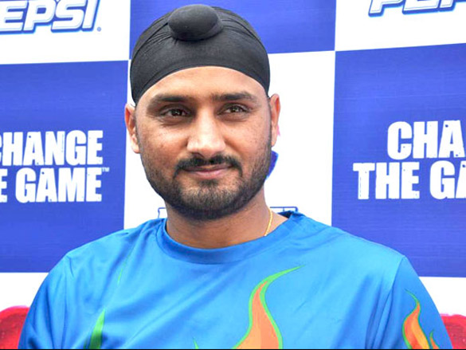

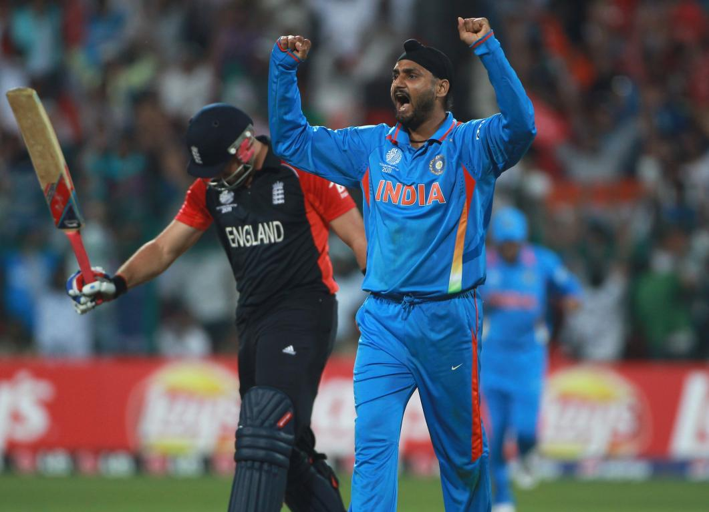
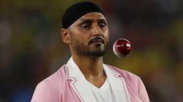

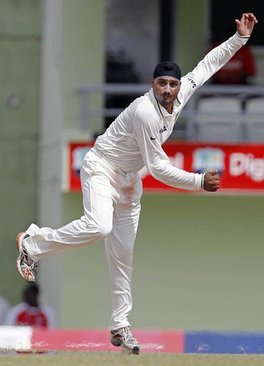
Harbhajan Singh (born 3 July 1980), also known by his nickname Bhajji, is a former Indian cricketer who became a politician, serving as a Member of Parliament in Rajya Sabha. He is also a film actor, a television celebrity and a cricket commentator.
Harbhajan played for India from 1998 to 2016 as an off spin bowler. In domestic cricket, he played for Punjab cricket team; and in the Indian Premier League for Mumbai Indians, Chennai Super Kings, and Kolkata Knight Riders. Considered to have been one of the best spin bowlers of his era, he was in the Indian teams that won the 2007 T20 World Cup and the 2011 Cricket World Cup, and also their team that were joint-winners with Sri Lanka of the 2002 ICC Champions Trophy
2017 Champions Trophy exclusion:
Harbhajan was again excluded from the Indian squad for the 2017 Champions Trophy in England. After hearing of his exclusion, Harbhajan claimed he did not receive the same "privileges" other veteran cricketers, namely MS Dhoni, have been afforded by the national selectors. After the media pounced on this comment, Harbhajan claimed the media frenzy took his statement out of proportion.
2009 ICC tournaments
Harbhajan was part of the Indian team that attempted to defend their crown at the 2009 World Twenty20. However they lost all three of their matches in the Super 8s round and were eliminated. Harbhajan took 3/30 in one of those matches against England, and ended the tournament with five wickets at 26.20 and an economy rate of 6.55.[citation needed] During the tour of the West Indies that followed, Harbhajan took three wickets at 45.33, conceding almost a run a ball in three ODIs as India prevailed 2-1.
In September, Harbhajan took 5/56 in the final of the Compaq Cup to help secure a 46-run Indian win over the hosts Sri Lanka. It was his first five-wicket haul in three years and capped off a tournament in which he took six wickets at 22.00 in three matches. He then struggled at the 2009 ICC Champions Trophy in South Africa, taking 1/71 from ten overs against Pakistan and 0/54 from nine overs against Australia. India lost to Pakistan and the latter match was washed out. He then took 2/14 from eight overs against the West Indies, but it was not enough to prevent India from being eliminated in the first round, despite winning the match.
Virender Sehwag:
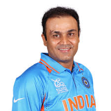
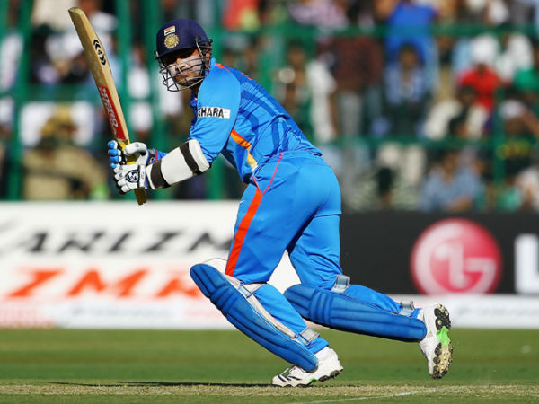
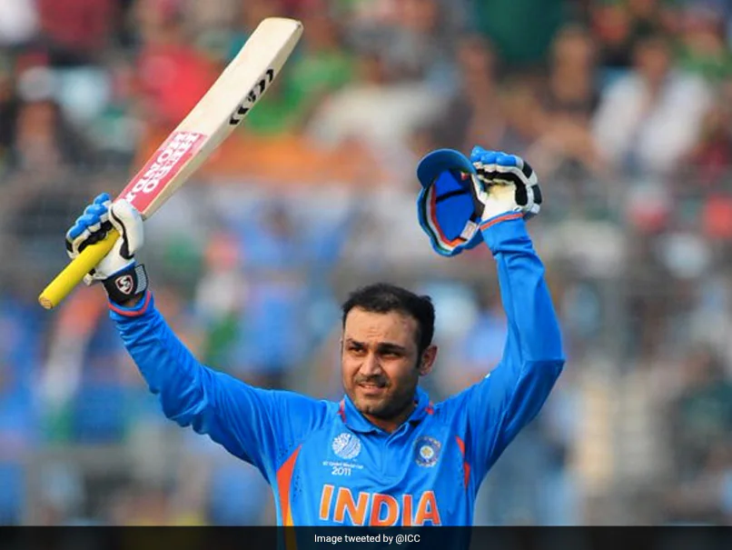
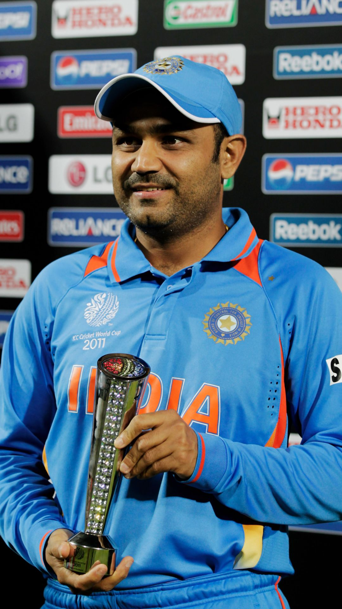

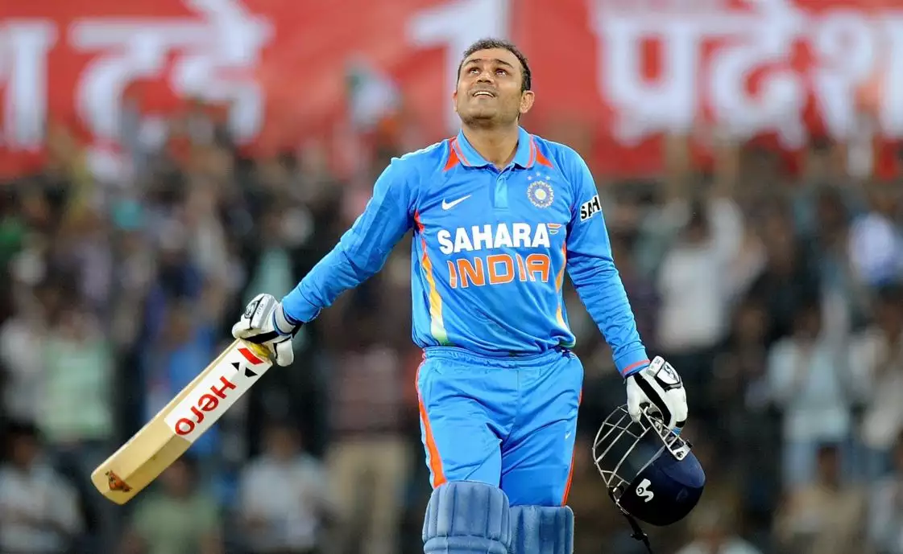
Virender Sehwag is a former Indian cricketer who represented India from 1999 to 2013. Widely regarded as one of the most destructive openers[citation needed] and one of the greatest batsman of his era, he played for Delhi Capitals in IPL and Delhi and Haryana in Indian domestic cricket. He played his first One Day International in 1999 and joined the Indian Test side in 2001. In April 2009, Sehwag became the first Indian to be honoured as the Wisden Leading Cricketer in the World for his performance in 2008,subsequently becoming the first player of any nationality to retain the award for 2009. He worked as stand-in captain occasionally during absence of main captain of India, also worked as Vice-Captain for Indian squad. He is former captain of Delhi Daredevils and Delhi Ranji Team. During his time with India, Sehwag was a member of the team that was one of the joint winners of the 2002 ICC Champions Trophy, the winners of the 2007 T20 World Cup, and the winners of the 2011 Cricket World Cup. During the 2002 ICC Champions Trophy, Sehwag was the highest run scorer with 271 runs. In 2023, he was inducted into ICC Cricket Hall of Fame.
Sehwag holds multiple records including the highest score made by an Indian in Test cricket (319 against South Africa at M. A. Chidambaram Stadium in Chennai), which was also the fastest triple century in the history of international cricket (reached 300 off only 278 balls) as well as the fastest 250 by any batsman (in 207 balls against Sri Lanka on 3 December 2009 at the Brabourne Stadium in Mumbai). Sehwag also holds the distinction of being one of four batsmen in the world to have ever surpassed 300 twice in Test cricket.[5] Sehwag has the highest career strike rate in Test matches among batsmen with minimum 3000 Test runs. Sehwag's career strike rate in Test matches is 82.23. In March 2009, Sehwag smashed what was until then the fastest century ever scored by an Indian in ODI cricket, from 60 balls. On 8 December 2011, he hit his maiden double century in ODI cricket, against West Indies, becoming the second batsman after Sachin Tendulkar to reach the landmark. His score became the highest individual score in ODI cricket—219 off 149 balls which was later bettered by Rohit Sharma—264 off 173 balls on 13 November 2014. He is one of only two players in the world to score a double hundred in ODI and a triple hundred in Test Cricket, the other being Chris Gayle
Sehwag was appointed as vice-captain of the Indian team under Rahul Dravid in October 2005 but due to poor form, he was later replaced by V. V. S. Laxman in December 2006 as Test vice-captain. In January 2007, Sehwag was dropped from the ODI team and later from the Test team as well.During his term as vice-captain, Sehwag led the team in place of injured Dravid in 2 ODIs and 1 Test. Following his return to form in 2008 and the retirement of Anil Kumble, Sehwag was reappointed as the vice-captain for both Tests and ODIs. By early 2009, Sehwag had reestablished himself as one of the best performing batsmen in ODI cricket.
Awards and Honors:
- Arjuna Award (2002)
- 2007 - Polly Umrigar Award for International cricketer of the year
- Wisden Leading Cricketer in the World 2008, 2009
- ICC Test Player of the Year 2010
- Padma Shree 2010
- HonoursOn 31 October 2017, Delhi and District Cricket Association (DDCA) honoured Sehwag by naming Gate No.2 at the Arun Jaitley Stadium after him.